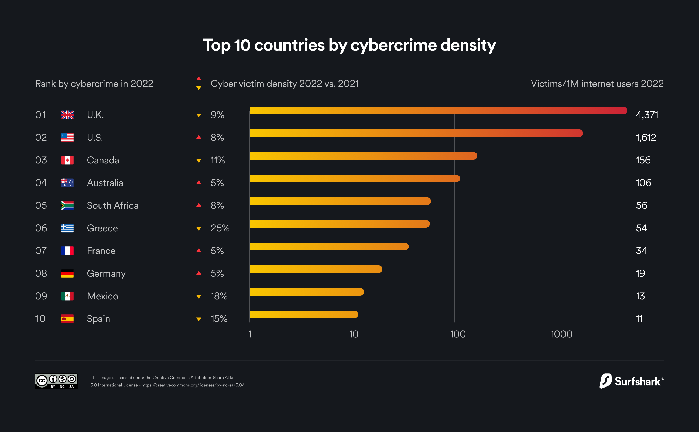

Cyber Crime Statistics 2025:
Cost, Industries & Trends
Cybercrime statistics show that a minimum of 422 million individuals were impacted, according to the FBI’s internet crime records with 800,944 complaints registered in 2022. Nearly 33 billion accounts will be breached in 2023 with the cost of these breaches predicted at $8 trillion.
The cost of cybercrimes is projected to reach $10.5 trillion by 2025. It is said that 80% of reported cyber crimes are generally attributed to phishing attacks. At 16% phishing was the 2nd common reason for data breaches and the costliest averaging $ 4.91 million in breach costs.
How often does cybercrime happen?
33 billion accounts will be breached in 2023 which converts to 2328 per day, 97 cybercrime victims per hour. Cyber attacks of 8,00,000 have been recorded in total, and on average, there is a hacker attack every 39 seconds.
Over the last 21 years from 2001 to 2021, cyber crime has claimed at least 6.5 million victims with an estimated loss of nearly $26 billion over the same period.
Top Cyber Crime Statistics 2025
- The next five years will see a 15% increase in cybercrime costs reaching 10.5 trillion by 2025.
- The global annual cost of cybercrime will reach $8 trillion annually in 2023.
- Cybersecurity Ventures predicts crypto crime will cost the world $30 billion annually by 2025.
- Ransomware will cost its victims around $265 billion (USD) annually by 2031.
- 80% of reported cyber crimes are generally attributed to phishing attacks in the technology sector.
Cyber Crime Statistics Worldwide 2025
This section will list some of the major cybercrime statistics from the 2018-2024 period. This is relevant as there has been a steady increase in cyber attacks during this period which is contributing to the increase in cyber insurance claims.

Key Takeaways
- The highest cost of a data breach was $5.09 million in the U.S.A. in 2023.
- Phishing attacks were the most common cause of data security incidents in 2023 at 41%.
- Spear-phishing is used by 96% of threat actors to gather intelligence.
57% of breached organizations are likely to pass cybersecurity incident costs to customers.
IBM’s 2023 report shows that 95% of organizations have faced at least one cybersecurity-related incident. Out of which only 51% are likely to increase security investments. 57% of organizations preferred to pass the incident costs to consumers.
Data breach lifecycle 108 days shorter with extensive use of AI and automated security.
AI and automation in cybersecurity had a major impact on the speed of identification and containment of vulnerabilities. The data breach lifecycle was 214 days for companies that deployed AI measures versus 322 days for companies that didn’t, a reduction of 108 days.
Ransomware victims that involved law enforcement saved $470,000 (IBM 2023 Report)
Ransomware victims that involved law enforcement saved $4.7 million in average costs of a data breach. Despite the large savings, only 37% of organizations choose to involve law enforcement after a ransomware attack.
Only 1/3rd of data breaches were detected internally by company security.
One-third of data breaches were detected by the studied companies’ internal teams. While a staggering 27% was disclosed by the attacker itself. These attacks cost nearly 1 million dollars when compared to companies that self-identified breaches (IBM 2023 Report).
Organizations that deploy AI and automation in security had lower data breach costs at $1.8 million
Organizations that use AI and automation in their organization’s security measures experienced lower data breach costs, saving $1.8 million as opposed to companies that didn’t deploy these measures. This was the biggest cost saver according to IBM’s 2023 Report.
Cybersecurity Ventures predict 3.4 million unfilled jobs in cybersecurity jobs in 2024
Unfilled jobs in cybersecurity are predicted to reach 3.4 million in 2024 according to Cybersecurity Ventures. This is a stark increase from Cisco’s previous 2014 estimate of 1 million job openings in cybersecurity.
Q2 2023 saw an average wire transfer amount of $293,359 in BEC attacks
First quarter of 2023 the average wire transfer amount requested in BEC attacks was $187,053. This saw a drastic 57% increase in the second quarter of 2023 where the average was $293,359.
APWG observed 1,286,208 phishing attacks in the second quarter of 2023
The second quarter of 2023 saw 1,286,208 phishing attacks. This was the third-highest quarterly total. However, phishing is seen to be on a downward trend. The first quarter of 2023 on the other hand only saw 1,624,144 phishing attacks.
2023 saw an 8% increase in weekly cyberattacks globally
With the 8% increase in weekly cyberattacks, phishing attacks stood out at 41% as the most common cause of infections. Extortion was noted to be the main aim of 27% of cyberattacks and data theft factored into 19% of all cybersecurity incidents.
Cybercrime is a trillion-dollar industry for criminals with 43% of attacks targeting SMBs
The highest cost of a data breach was $5.09 million in the U.S.A in 2023. Cybercrime earns cybercriminals $1.5 trillion every year. Small businesses account for 43% of cyber attacks annually. According to IBM, phishing was one of the top attack vectors in cybercrime at 16%.
Cyber Claims increased from 69% to 83% for SMEs
Criminal activities that increased cyber claims increased from 69% in 2018 to 83% in 2020 for SMEs. A Cyber Claims Study by NetDiligence evaluated 5,797 claims data from 2016 to 2020 and found 32% for ransomware affecting SMEs, 10% hacking, and another 9% for business email compromise to be the root cause of losses sustained.
6.7 hours – Average time spent resolving a cybercrime
Globally, those who experienced cybercrime in the past year spent an average of 6.7 hours resolving it for an estimated 2.7 billion hours lost in total.
62% of cyber attacks are carried out through data gathered by spear-phishing
Intelligence is gathered using spear-phishing by 96% of threat actors. 62% of attacks that did not stem from a cybersecurity error or misuse usually were carried out through the usage of stolen personal information obtained through phishing and/or brute-force attacks.
Top choice for phishing website domains and email attachments
According to PurpleSec, half the phishing email attachments that are received are in the form of Microsoft documents like Word (39.3%), Executable (19.5%), Rich Text (14%), and Excel (8.7%).
Phishing websites were generally hosted on .com domains (40%), but threat actors also used other reputable domains like .org (1.8%) and .net (3%). Nearly 32 percent of phishing websites made use of HTTPS in 2020 to portray an image of assured security.